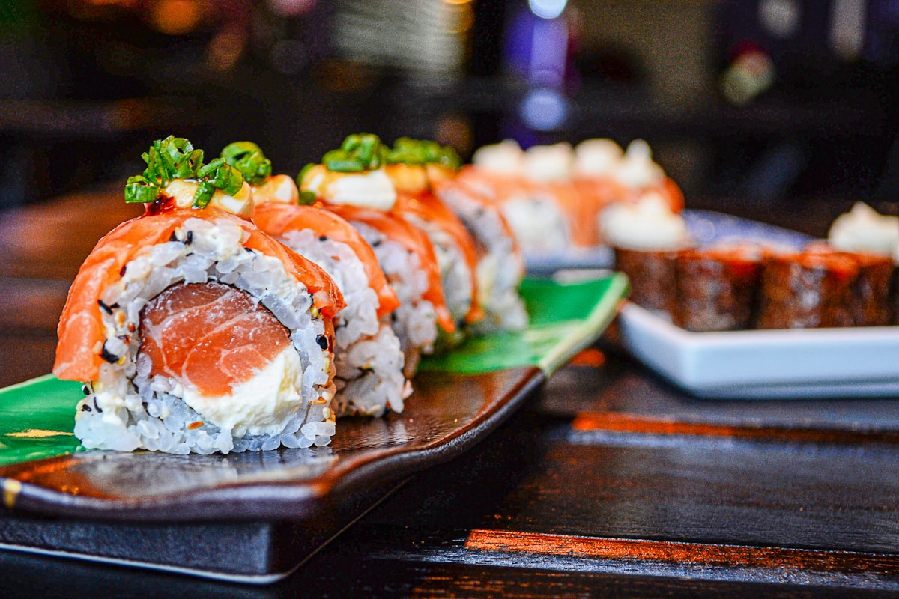

My Favorite Dinner: Japanese Sushi

Discover the artistry and flavors of authentic Japanese sushi - a perfect harmony of fresh ingredients and traditional techniques.
Featured Sushi Varieties
Nigiri Sushi
Hand-pressed rice topped with fresh fish, a classic representation of sushi craftsmanship.
Maki Rolls
Delicious rolled sushi with various fillings wrapped in nori seaweed.
Sashimi
Premium cuts of raw fish, representing the purest form of Japanese seafood cuisine.